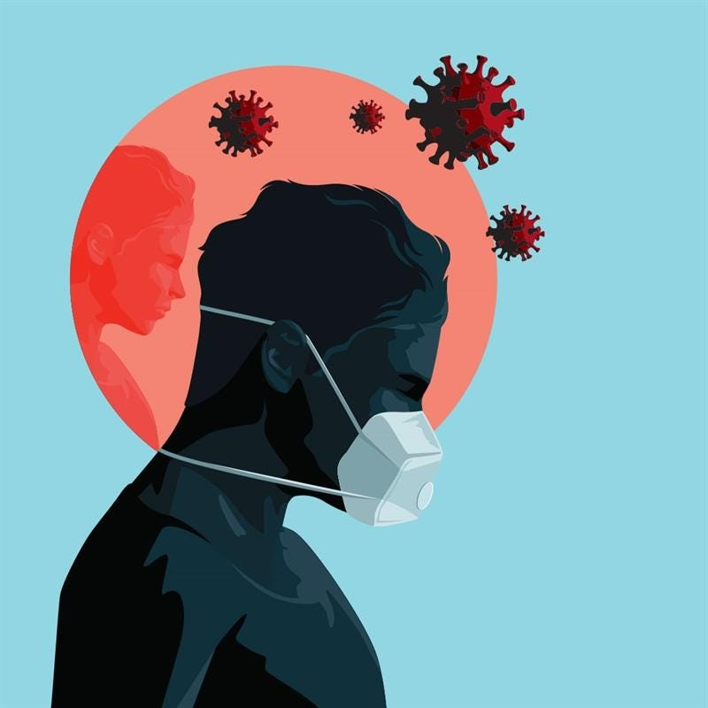

The Importance of Prioritizing Mental Health During COVID-19

Since March 2020, we’ve been facing a global pandemic that has impacted every facet of our daily lives. With COVID-19 cases continuing to rise, the impacts of this pandemic are taking a toll physically, emotionally and financially.
Prior to the pandemic, one in five adults in America experienced mental health challenges at any given time. However, recent surveys from the American Psychological Association show a drastic increase in the number of U.S. adults who report symptoms of stress, anxiety and depression during the pandemic.
The pandemic has brought about new challenges and feelings of uncertainty for everyone. From dealing with financial stress, to parents needing to balance work and care for children at home, to mandatory self-quarantining measures, it can often feel overwhelming.
Mental healh is an important part of our well-being and heavily
influences overall quality of life. So as we navigate through
COVID-19, how can we make mental health a priority?
Here are some key strategies that you can adopt to be proactive in caring for your mental well-being.
- Educate yourself and be supportive of others
- Understand what resources are available to you
- Embrace daily self-care
With many people working remotely and the lines between work
and home blurred more than ever before, integrating self-care
into your regular routine is critical to your well-being
Exercise
Whether it’s taking a virtual fitness class or going for a walk, exercising can be effective in relieving stress and anxiety.
Be smart about screen time.
Daily screen time has significantly increased since the start of the pandemic. Ensure you’re balancing screen time with positive activities such as exercising, reading or other hobbies that keep your body and mind engaged.
Practice mindfulness
Practicing mindfulness through meditation and other techniques can help improve your mental health.
Focus on positive thoughts.
Start or end your day by writing down three things you are grateful for.
Take time to unwind.
Even if it’s just for a few minutes, make some time each day to decompress and relax, especially when transitioning from your workday to home life.
Connect with others.
Staying connected to people who bring you happiness is essential. Meet a friend in a park for a masked, socially distanced walk, or coordinate virtual activities, like dinners or game night to nurture your relationships.
Eat healthy.
Fueling your body with healthy foods can not only improve your health, but it can lower stress levels.
Regulate your sleep.
Try waking up and going to bed at the same time each night. Also, try and avoid caffeine in the hours before bedtime.